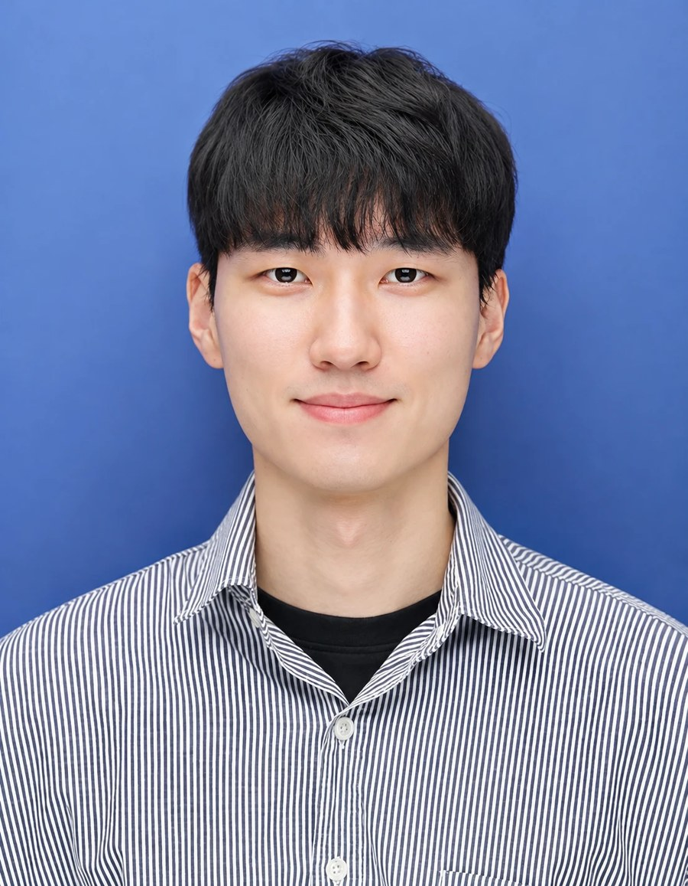

Learning without forgetting
Rehearsal-free, prompt-based domain continual learning that adapts to new domains with a single backbone and a single forward pass.
WACV 2027 · ACCV 2026 · ICCRD 2026
Ph.D. Student · Sungkyunkwan University
Building AI that adapts.
I'm a Ph.D. student in Electrical and Computer Engineering at Sungkyunkwan University (Media System Lab, advised by Prof. Jitae Shin). I build vision models that keep learning as the data changes — without forgetting what they knew, without needing every input, and without a large compute budget. My work spans medical imaging, industrial inspection, and natural images.

Education, experience, and tools.
Recent updates and milestones.
UniPrompt-CL accepted to WACV 2027 as first author — code released.
Three co-authored papers accepted to ACCV 2026, one selected for an oral presentation.
Started an NRF Core Research project on adaptive state inference from partially available multimodal clinical data.
Filed a PCT application (PCT/KR2026/011329) for multimodal-fusion diagnosis of exposure keratopathy.
Causal-graph-consensus personalized federated learning for medical imaging published in Electronics.
Started a Ph.D. in Electrical and Computer Engineering at Sungkyunkwan University.
Received an M.S. in ECE from Sungkyunkwan University — thesis: Efficient Continual Learning Framework for Medical Imaging AI.
Served as a reviewer for IEEE ICIP 2026.
First-author paper on contrastive multimodal fusion for exposure keratopathy at the MICCAI 2025 OMIA Workshop.
Filed a Korean patent application (10-2025-0121342) on multimodal fusion learning for exposure keratopathy.
Started an M.S. in ECE at Sungkyunkwan University (Media System Lab).
What I study and why it matters.
Models that work in the lab often fail in deployment: a new hospital or camera shifts the input distribution, a modality goes missing, or the device simply can't afford the compute. My research makes vision models stay accurate as conditions change — with a particular focus on domain continual learning, where a model is updated on new data alone, without storing past data and without retraining from scratch.
Rehearsal-free, prompt-based domain continual learning that adapts to new domains with a single backbone and a single forward pass.
WACV 2027 · ACCV 2026 · ICCRD 2026
Multimodal fusion that uses every modality available and still works when some are absent — one model for any input combination.
MICCAI-W 2025 · IEEE JBHI (review) · KR / PCT patent
Lightweight conditioning, memory-efficient updates, and noise-robust representations for restoration and anomaly detection on a budget.
ACCV 2026 · ICCE-Asia 2024
Continual learners that decide what to learn anew and what to reuse based on the size of a distribution shift and its conflict with existing knowledge, and efficient training — parameter-efficient tuning, distillation, and memory-light updates — so models can keep learning on a small compute budget.
Problem, approach, and measured outcome.
A lightweight domain continual learner that keeps adapting as hospitals and devices change — without storing any past data, using one backbone and one forward pass.
With Samsung Medical Center: diagnose corneal disease from the broad-beam photo every clinic already takes, and get more accurate whenever special-illumination photos are available. I led everything except clinical data collection — design, modeling, experiments, papers, and patents.
I diagnosed that the prior 1D radial frequency descriptor loses orientation and cannot separate directional degradations such as rain and motion blur, and proposed the 2D polar extension that became the paper's core design (PFS). One parameter-free descriptor conditions the decoder across five degradations.
Measures representation drift per domain and class to set how strongly to preserve old knowledge, and reuses a JEPA to store compact summaries of past domains instead of raw data.
Handles noise at the feature level rather than the image level: feature-space augmentation plus a Locally Aware Common Patch Maker build a robust memory of normal patches — with no extra re-encoding cost.
Funded research and collaborations.
NRF Core Research · National Research Foundation of Korea
Inferring patient state in the ER and ICU from whatever clinical signals are available (ECG, vital signs, lab values) and predicting short-term deterioration in real time — with missing-modality-robust representations, conditional fusion of chest X-rays and reports, and calibration across hospitals.
Role — one of two core Ph.D. student researchers; managing development by five M.S. researchers. Year 1 in progress.
SKKU × Samsung Medical Center
Diagnostic AI for patients with limited access to care, built around the broad-beam photo routinely captured in clinics. Produced a MICCAI 2025 workshop paper, an IEEE JBHI submission, and Korean and PCT patent applications.
Role — 4-person team; owned everything except clinical data collection.
AI CHAMPION 2025 · SKKU × Samsung Medical Center
Screening multiple diseases, including diabetic retinopathy and depression, from fundus photographs. The team was selected as a Top 100 team out of about 500.
Role — team member; literature review and data collection.
Hanium ICT Mentoring · Graduation project
Trained a disease classifier on AI Hub data, compressed it with KL-divergence knowledge distillation, and served it through an API to a mobile app. Won the Hanium Selected Works Prize and the KNUT graduation-project Silver Prize.
Role — team lead and AI model owner.
Hanium ICT Mentoring
Indoor navigation and serving by combining object detection with SLAM. Won the Hanium Bronze Prize and the KNUT campus contest Grand Prize (President's Award).
Peer-reviewed papers and work under review.
12 peer-reviewed papers · 8 first-author · 5 under review · * first / co-first author
Applications from clinical collaboration.
Two-stage multimodal fusion learning framework for automatic grading of Exposure Keratopathy (EK). Trained with four ocular imaging modalities collected at a tertiary hospital (broadbeam, slit-beam, scattering, and blue-light): modality-wise features are aligned and fused during training, while inference enables modality-agnostic classification using only a single broadbeam image to implicitly leverage information from other modalities.
Single-image inference reaches 0.841 accuracy and 0.838 F1 on four-level severity grading — an average gain of more than +16%p over a single-modality baseline, reducing acquisition burden and improving clinical applicability.
Awards, scholarships, and service.
4 awards · 7 scholarships · 1 certification · 1 service role